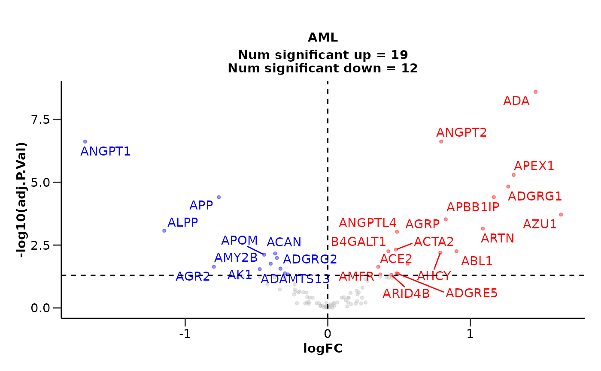

do_ttest() performs differential expression analysis using t-test.
It separates the data in case-control groups, checks for data normality and
perform a t-test or Wilcoxon test respectively. It also performs p value FDR adjustment.
It can generate and save volcano plots.
Usage
do_ttest(
olink_data,
metadata,
variable = "Disease",
case,
control,
wide = TRUE,
only_female = NULL,
only_male = NULL,
volcano = TRUE,
pval_lim = 0.05,
logfc_lim = 0,
top_up_prot = 40,
top_down_prot = 10,
palette = "diff_exp",
report_nproteins = TRUE,
subtitle = NULL,
save = FALSE
)Arguments
- olink_data
A tibble with the Olink data in wide format.
- metadata
A tibble with the metadata.
- variable
The variable of interest that includes the case and control groups.
- case
The case group.
- control
The control groups.
- wide
If the data is in wide format. Default is TRUE.
- only_female
The female specific diseases. Default is NULL.
- only_male
The male specific diseases. Default is NULL.
- volcano
Generate volcano plots. Default is TRUE.
- pval_lim
The p-value limit of significance. Default is 0.05.
- logfc_lim
The logFC limit of significance. Default is 0.
- top_up_prot
The number of top up regulated proteins to label on the plot. Default is 40.
- top_down_prot
The number of top down regulated proteins to label on the plot. Default is 10.
- palette
The color palette for the plot. If it is a character, it should be one of the palettes from
get_hpa_palettes(). Default is "diff_exp".- report_nproteins
If the number of significant proteins should be reported in the subtitle. Default is TRUE.
- subtitle
The subtitle of the plot or NULL for no subtitle.
- save
Save the volcano plots. Default is FALSE.
Value
A list with the differential expression results and volcano plots.
de_results: A list with the differential expression results.
volcano_plots: A list with the volcano plots.
Details
It will filter out rows with NA values in any of the columns that are used for
correction, either the variable or in correct.
Examples
de_results <- do_ttest(example_data,
example_metadata,
case = "AML",
control = c("CLL", "MYEL"),
wide = FALSE)
# Results for AML
de_results$de_results
#> # A tibble: 100 × 6
#> Assay P.Value logFC Disease adj.P.Val sig
#> <chr> <dbl> <dbl> <chr> <dbl> <chr>
#> 1 ANGPT1 0.000000328 -1.76 AML 0.0000328 significant down
#> 2 ADA 0.00000121 1.29 AML 0.0000605 significant up
#> 3 AZU1 0.00000485 1.79 AML 0.000162 significant up
#> 4 ACP6 0.0000141 -0.910 AML 0.000351 significant down
#> 5 APP 0.0000213 -0.784 AML 0.000425 significant down
#> 6 ACAN 0.0000583 -0.581 AML 0.000971 significant down
#> 7 ATOX1 0.000133 -0.921 AML 0.00190 significant down
#> 8 ANXA11 0.000320 -0.833 AML 0.00401 significant down
#> 9 AGR2 0.000433 -1.20 AML 0.00481 significant down
#> 10 ARHGEF12 0.000585 -1.13 AML 0.00585 significant down
#> # ℹ 90 more rows
# Volcano plot for AML
de_results$volcano_plot
